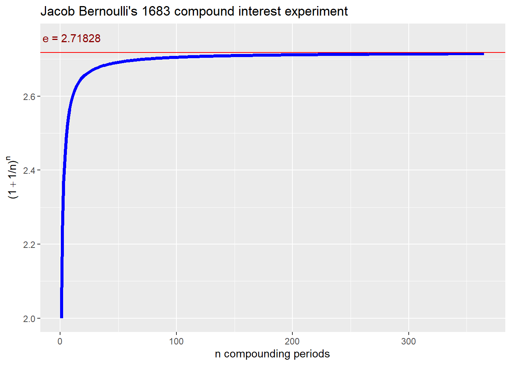

Why do we take differences of logarithms to calculate returns?
A great question deserves a story.
You can find the source code here.
In 1683, Jacob Bernoulli posed this problem in compound interest:
\[ I = I ( 1 + r) ^t = 1 (1 + 1)^1 = 2 \] where \(I =\) investment at the beginning of the year, \(r =\) the return in one year, and \(t =\) the number of years (in this case simply 1 year).
\[ I = I ( 1 + r/2) (1 + r/2) = 1 (1 + 0.5)^2 = 2.25 \] 3. Invest 1 ducat for one-quarter of a year at annual rate $r = $ 1 and quarterly equivalent $r/4 = $0.25. Reinvest what you earn in a quarter for another quarter. Invest the two quarter balance for the third. Invest the three quarter balance for the fourth and final quarter. This yields
\[ I = I ( 1 + r/4) (1 + r/4) (1 + r/4) (1 + r/4) = 1 (1 + 0.25)^4 = 2.4414062 \]
\[ I = I ( 1 + r/365) (1 + r/365) ... (1 + r/365) = 1 (1 + 0.0027397)^{365} = 2.7145675 \]
In general, Bernoulli was calculating the expression
\[ \left(1 + \frac{1}{n}\right)^n \] as \(n \rightarrow \infty\), that is, as the number of compounding periods \(n\) got ever larger. In the limit, this expression converges to the transcendental number \(e=\) 2.7182818.
In finance, this is the equivalent of earning 2.7182818 ducats in a year for an investment of 1 ducat at the beginning of the year at 100% rate of return per year compounded continuously.
Here is a picture of the calculated approximation of \(e\) versus the number of compounding periods \(n\).
library(ggplot2) # to plot e approximation versus number of compounding periods
library(latex2exp) # to build latex math expressions in ggplot using TeX to generatelatex string
options(digits = 5) # overall rounding
r <- 1 # 100% annual rate of return as in Bernoulli (1683)
t <- 1 # one year as in Bernoullil (1683)
n <- 1:365 # number of compounding periods
e_approx <- (1 + r/n)^n # vector of e approximations
e_asymptote <- round(exp(r*t), 5) # need to round result for ggplot
e_label <- paste0("e = ", e_asymptote) # horizontal label for asymptote
e_title <- "Jacob Bernoulli's 1683 compound interest experiment" # graph title
y_label <- TeX('$(1 + 1/n)^n$') # rmarkdown needs \\ for latex escape
e_df <- data.frame(e_approx = e_approx, n = n) # data frame needed for ggplot
ggplot(e_df, aes(x = n, y = e_approx)) +
ylab(y_label) +
xlab("n compounding periods") +
geom_line(color = "blue", size = 1.5) +
geom_hline(yintercept = e_asymptote, color = "red") +
annotate("text", label = e_label, x = 10, y = e_asymptote + 0.04, color = "darkred" ) +
ggtitle(e_title) Calculations are rounded to 5 decimal places.
In finance, and in Bernoulli’s example, \(r =\) 1.00, or an annual return of 100%. For a duration of \(t=\) 1 year, an investor would earn
\[ Ie^{rt} = 1 \times e^{1.00 \times 1} = 2.71828 \] if the investor could earn continuously through every minute, every second of every day in the year.
For example, let the investor earn \(r=\) 5% per year on a $1,000 investment for one month. The number of years in a single month is a fraction \(t=1/12\) 0.08333. The investor would have at the end of a month
\[ Ie^{rt} = 1000 \times e^{0.05 \times (1/12)} = 1004.17536 \]
We calculate the inverse of \(e^{rt}\) to calculate, isolate \(r\). This \(r\) is the annually continuously compounded rate of return. In algebra, \(e\) is the base and \(rt\) is the exponent.
The inverse of any exponential term is the logarithm. The natural logarithm, \(ln()\), is the logarithm to the base \(e\). For any base raised to a power, the logarithm answers the question: “What is the power?” In finance, we have a future value. With continuous compounding, we ask: “What is the corresponding rate of return?”
Here date 0 is the beginning of the month and date 1 is the end of the month. Let’s name the result at the end of one month \(I_1\) and the investment at the beginning of the month \(I_0\). Then we have with continuous compounding
\[ I_1 = I_0 e^{rt} \] Divide both sides of the this equation by \(I_0\) to get \[ \frac{I_1}{I_0} = e^{rt} \] Then take logarithms of both sides to isolate \(rt\) to get \[ ln \left(\frac{I_1}{I_0}\right) = ln(e^{rt}) = rt \] From algebra we know that the log of a ratio is the same as the difference of the logs of the numerator and denominator. Then also dividing both sides by \(t\), the holding period, we have \[ r = \frac{ln(I_1)-ln(I_0)}{t} = \frac{6.91192 - 6.90776}{0.08333} = 0.05 \] We must remember that this is the annual rate of return continuously compounded over a one month holding period.
The difference in logarithms is equivalent to the logarithms of the ratio of future to present value. The difference must be divided by the fraction (or multiple) of the annual holding period.
Subtract one and it looks a lot like a percentage change in value, also known as the rate of return.
Copyright © 2018 William G. Foote. All rights reserved.